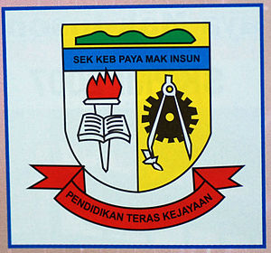

I attended Sekolah Kebangsaan Paya Mak Insun (SKPMI) from 2011 to 2016. My primary school was a place of joy and learning. The teachers were kind and patient, always encouraging us to reach our full potential. I loved playing with my friends during recess, exploring the vast playground, and participating in various school activities. The library was my favorite place, filled with books that sparked my imagination. I cherish the memories of those formative years, as they shaped me into the person I am today.
My Educational Journey
| Level | School Name & Logo | Description |
|---|---|---|
| Primary School |  |
Click to learn more
|
| Secondary School |
Click to learn more
After finished primary school, I continued my education at Sekolah Model Khas Bukit Jenun (SMoKBJ) from 2017 to 2021. My secondary school years were a whirlwind of academic challenges and personal growth. The rigorous curriculum pushed me to my limits, fostering intellectual curiosity and critical thinking. I formed lifelong friendships with classmates who shared my passions and aspirations. Extracurricular activities, from sports to clubs, enriched my experiences and helped me discover hidden talents. |
|
| University |

|
Click to learn more
I am currently pursuing my diploma at Universiti Teknologi Mara (UiTM) Cawangan Kedah since 2022. My pursuit of an information management diploma at UiTM ignited a passion for organizing, analyzing, and interpreting vast amounts of data. The rigorous coursework challenged me to think critically, solve complex problems, and develop a keen eye for detail. I delved into subjects like database management, information systems, and data mining, gaining practical skills and theoretical knowledge. Through internships and research projects, I honed my ability to apply these skills to real-world challenges, paving the way for a fulfilling career in the ever-evolving field of information management. |